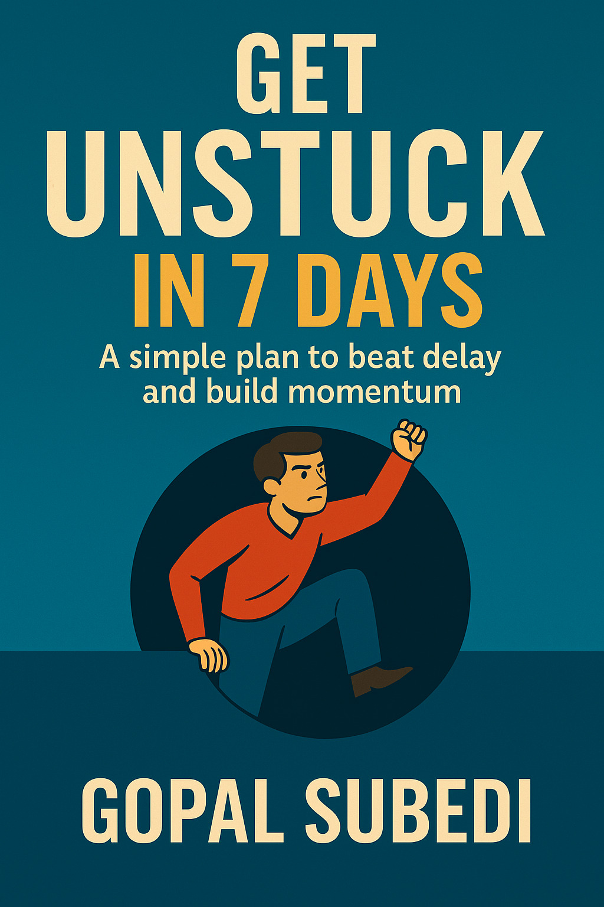

Break the cycle. Build momentum. Get things DONE — without burnout or guilt.
 Buy Now – Only $10Stuck in a loop of “I’ll do it later”? This guide is your 7-day plan to break free from procrastination and take back control of your time — one simple step at a time.
Inside, you'll find real-talk strategies, daily prompts, and proven mindset shifts that help you reset momentum and finally get things DONE.
It’s time to stop overthinking and start executing. This isn’t another feel-good book. It’s a practical reset for people who are ready to move.